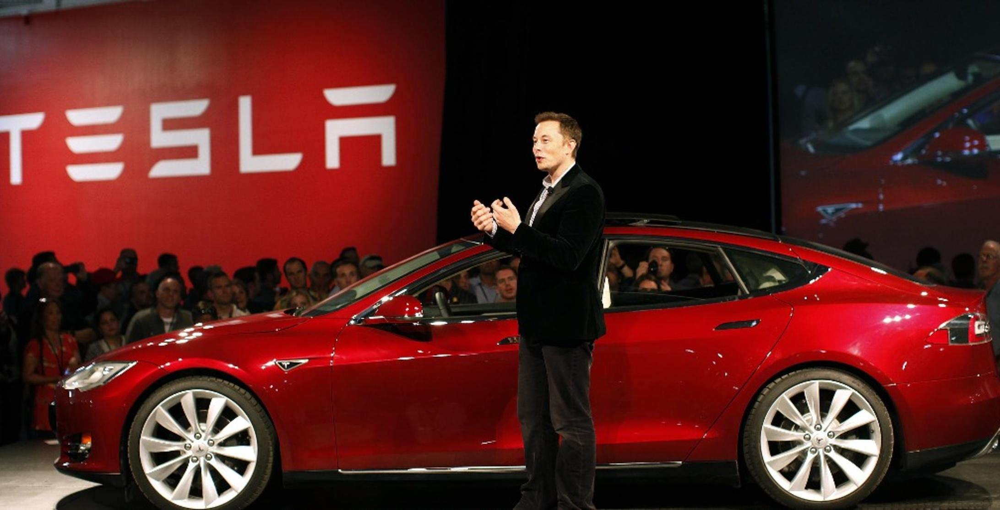
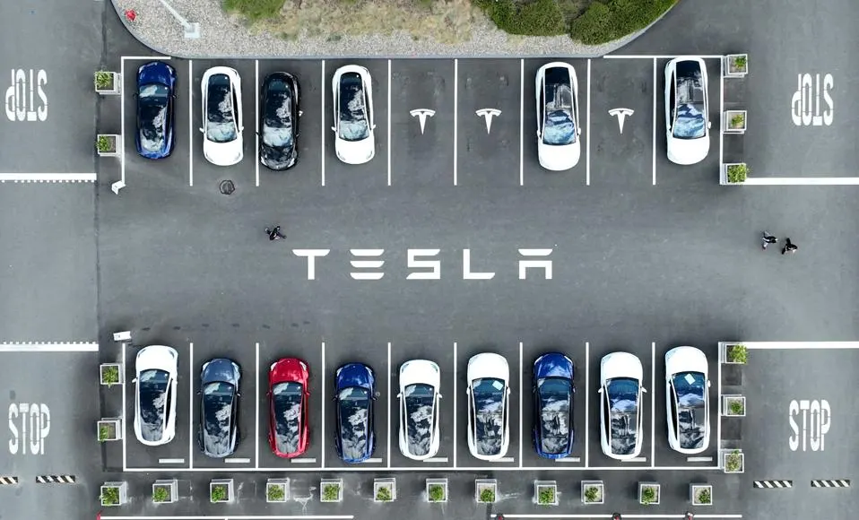
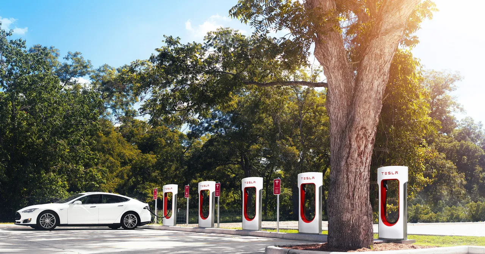

Tesla’s mission is to accelerate the world’s transition to sustainable energy. Since its founding in 2003, Tesla has designed and manufactured electric vehicles, including the Roadster, Model S, Model 3, Model X, and Model Y. With a focus on innovation and sustainability, Tesla is also leading the charge in energy solutions, producing solar energy products and energy storage systems for homes and businesses.
Founded in 2003 by a group of engineers who wanted to prove that electric vehicles could be better, quicker, and more fun to drive than gasoline cars, Tesla has grown from a startup into a global leader in the electric vehicle and energy solution sectors. Tesla's first vehicle, the Roadster, premiered in 2008 and showcased Tesla's technology. In 2012, the Model S set new standards for electric vehicles, with an unprecedented range of 265 miles per charge and safety and performance features that rivaled any car on the market.

Tesla’s innovations go beyond electric vehicles. The company’s Autopilot capabilities offer advanced driver assistance features designed to provide enhanced safety and convenience. Tesla also aims to make a positive environmental impact through its energy products, including the Powerwall, Powerpack, and Solar Roof, which enable homes, businesses, and utilities to manage renewable energy generation, storage, and consumption.

Tesla's influence extends globally with gigafactories in Nevada, New York, Shanghai, and Berlin that manufacture batteries, electric motors, and energy products, significantly reducing the cost of our products and making them accessible to more people. Tesla's commitment to sustainability is evident in every facet of the business, from vehicle production to energy solutions, with the overarching goal of transitioning the world to sustainable energy.

At Tesla, we are always looking for innovative minds who want to join us in our mission. We believe that the future of automotive and energy solutions lies in cutting-edge technology and sustainable practices. If you're passionate about making a difference, Tesla is the place for you.